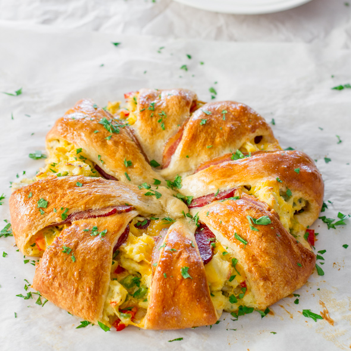

Breakfast Croissant Ring
Ingredients:
- 1 can of crescent rolls
- 8 slices of cooked bacon
- 2 cups cooked ground sausage
- 1 chopped bell pepper
- 5 eggs
- 1 cup of cheese
Mix eggs and peppers together until eggs are fully beaten. Cook mixture until scrambled and add cooked ground sausage. Unroll the crescent and lay it in a star pattern so that the thick
ends are all touching eachother with a circle in the middle. Place 1 peice of bacon on each crescent and add cheese to the top. Add the scrambled mixture and fold each cresent over. Bake for
20 minutes at 375 degrees.

Pudding Shots
Ingredients:
- 1 box instant chocolate pudding
- 3/4 cup milk
- 1/4 cup vodka
- 1/2 cup Baileys Irish Cream Liquer
- 1 cup Creamy Cool Whip
Mix pudding and milk together. Mix in vodka, Baileys, and Cool Whip. Put into small condiment cups and place in freezer. Makes ~24 shots